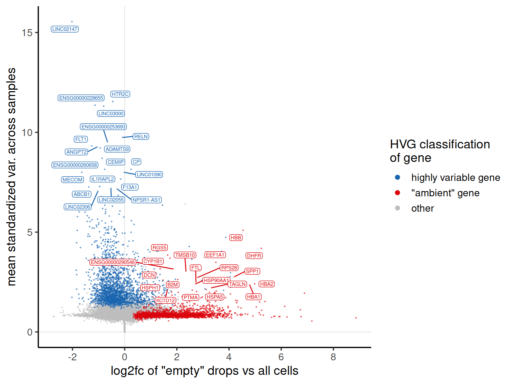
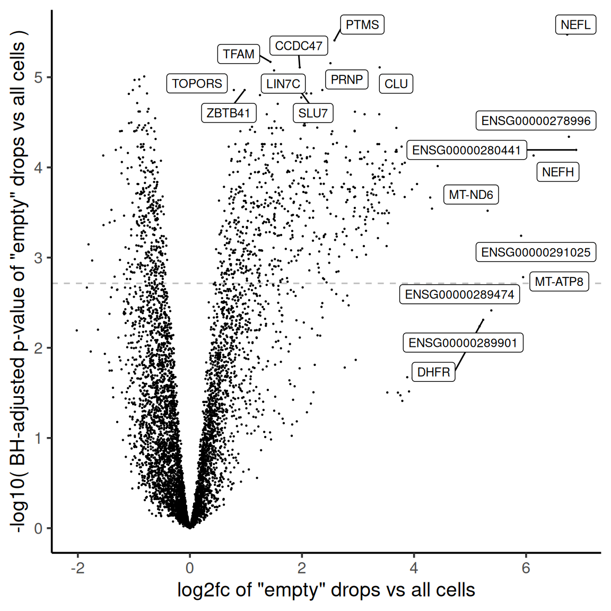
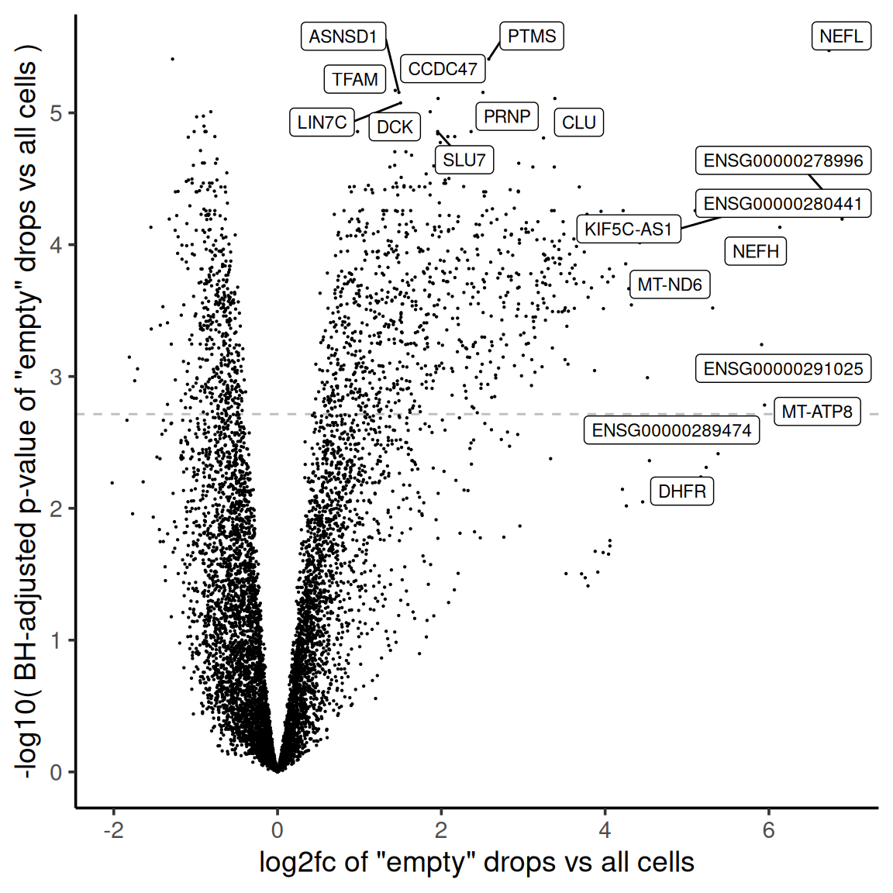
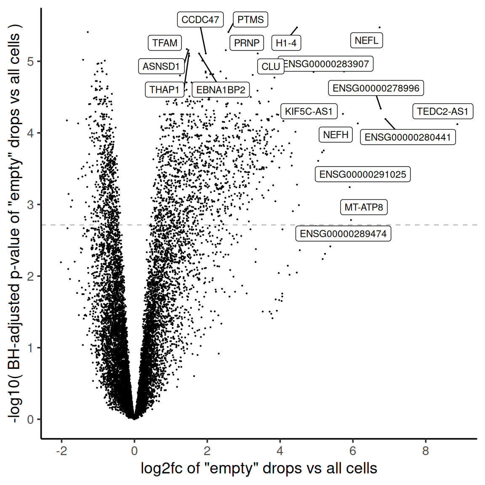
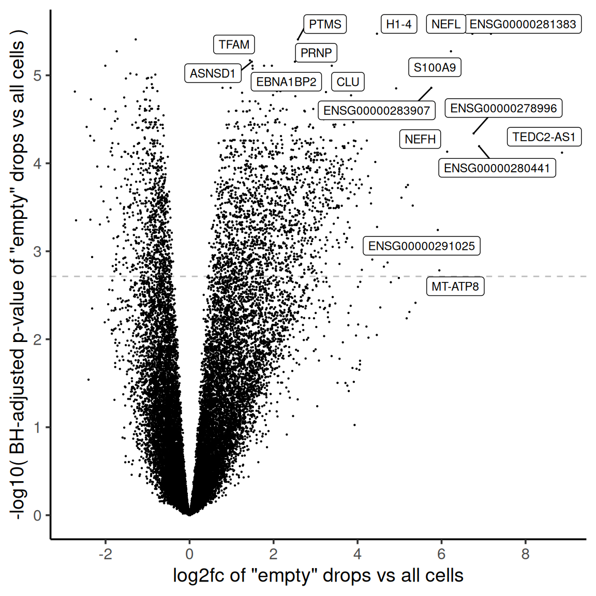
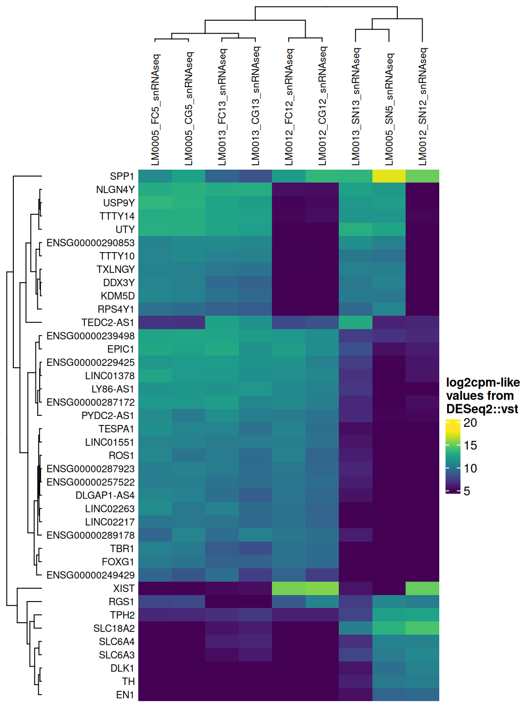
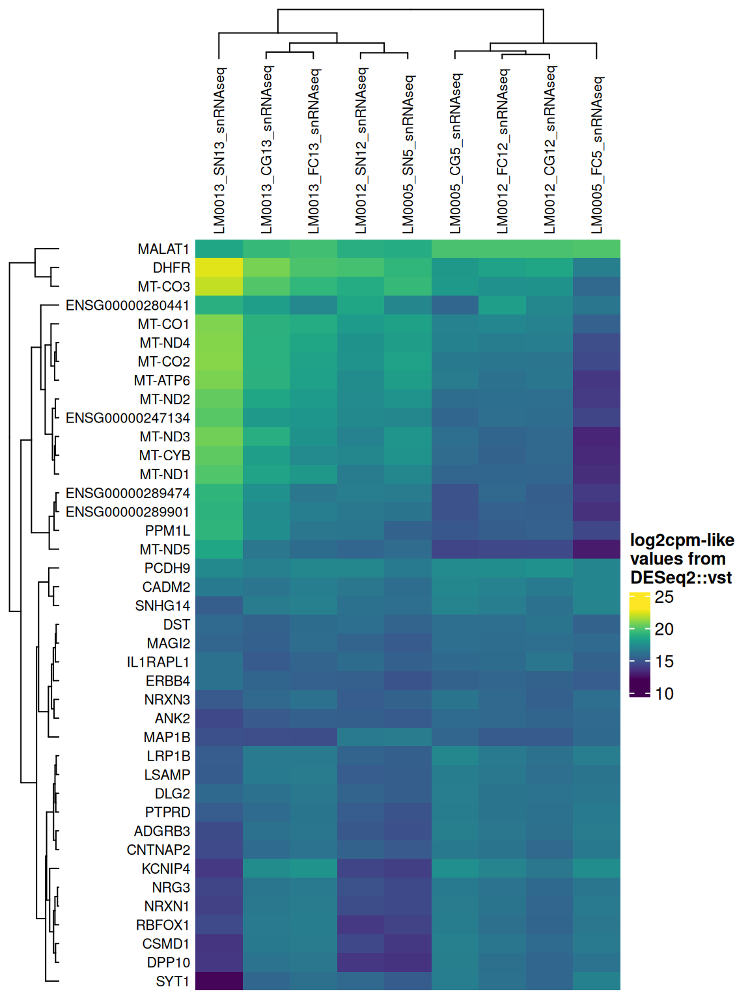
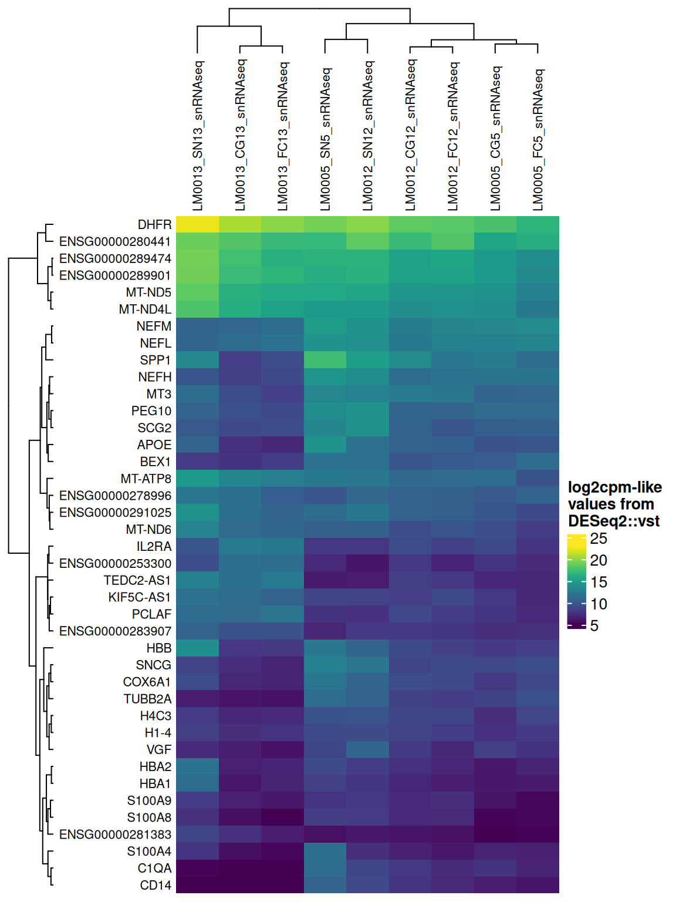
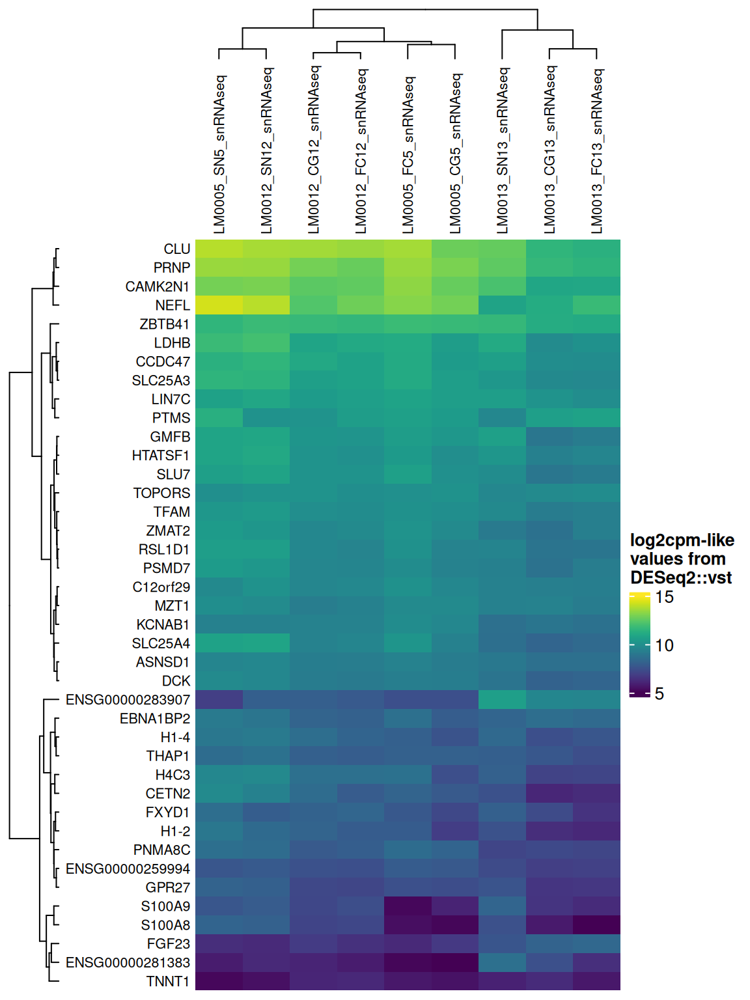

HVG selection diagnostics
The selection of highly variable genes is a crucial step in the integration process and in identifying clusters in single-cell experiments. However, contamination from ambient RNA can act as a significant confounding factor. This report provides plots to evaluate the influence of ambient RNA on the selection of highly variable genes and its potential impact on downstream analyses.
Are highly variable genes “ambient”?
The plot shows the extent to which highly variable genes identified using the Seurat VST method may be influenced by ambient RNA. The x-axis represents the log2fc values derived from the ambient gene estimation step (see the ambient DE module for more details), while the y-axis shows the trend-normalized variance calculated using the Seurat VST method. Each point represents a gene, annotated based on whether it is among the top HVGs and whether it is identified as “ambient” by the ambient gene detection step. Labelled genes are top 20 with highest mean variance, including genes that were not included as HVGs because of high expression in empty droplets.
Which genes are “ambient”?
The plot shows the results of the ambient gene detection procedure. The y-axis is the -log10 nominal p-value, with a dotted line indicating the threshold where the adjusted p-value is sufficiently small (< 0.01). Multiple plots are shown, each corresponding to a different minimum expression level filter applied to the ambient profiles.
>= 100 CPM expression in ambient

>= 50 CPM expression in ambient

>= 10 CPM expression in ambient

all genes

Which genes are variable across the ambient profiles?
Examining how ambient genes vary across different samples can provide valuable insights. Such variation may highlight cases where certain samples require distinct treatment, for example, if case and control samples consistently exhibit different ambient profiles.
The heatmaps display the pseudobulk expression of various genes across the ambient profiles of each sample in the dataset. The genes shown are the top 40 selected based on the following criteria:
- highest variance across ambient profiles;
- highest mean expression across ambient profiles;
- highest
log2fcin empty droplets vs cells in the ambient gene detection procedure; and - smallest p-value in empty droplets vs cells in the ambient gene detection procedure.
HVGs in ambient

Highest expression in ambient

Highest log2fc in ambient

Smallest p-value in ambient

Session info
Code
sessionInfo()R version 4.5.0 (2025-04-11)
Platform: x86_64-pc-linux-gnu
Running under: Ubuntu 24.04.2 LTS
Matrix products: default
BLAS: /usr/lib/x86_64-linux-gnu/openblas-pthread/libblas.so.3
LAPACK: /usr/lib/x86_64-linux-gnu/openblas-pthread/libopenblasp-r0.3.26.so; LAPACK version 3.12.0
locale:
[1] LC_CTYPE=en_US.UTF-8 LC_NUMERIC=C
[3] LC_TIME=en_US.UTF-8 LC_COLLATE=en_US.UTF-8
[5] LC_MONETARY=en_US.UTF-8 LC_MESSAGES=en_US.UTF-8
[7] LC_PAPER=en_US.UTF-8 LC_NAME=C
[9] LC_ADDRESS=C LC_TELEPHONE=C
[11] LC_MEASUREMENT=en_US.UTF-8 LC_IDENTIFICATION=C
time zone: Etc/UTC
tzcode source: system (glibc)
attached base packages:
[1] grid stats4 stats graphics grDevices utils datasets
[8] methods base
other attached packages:
[1] strex_2.0.1 stringr_1.5.1
[3] viridis_0.6.5 viridisLite_0.4.2
[5] circlize_0.4.16 DESeq2_1.50.2
[7] scales_1.4.0 ggrepel_0.9.6
[9] magrittr_2.0.3 ComplexHeatmap_2.26.1
[11] SummarizedExperiment_1.40.0 Biobase_2.70.0
[13] GenomicRanges_1.62.1 Seqinfo_1.0.0
[15] IRanges_2.44.0 S4Vectors_0.48.1
[17] BiocGenerics_0.56.0 generics_0.1.4
[19] MatrixGenerics_1.22.0 matrixStats_1.5.0
[21] ggplot2_3.5.2 data.table_1.17.4
loaded via a namespace (and not attached):
[1] gtable_0.3.6 shape_1.4.6.1 rjson_0.2.23
[4] xfun_0.52 htmlwidgets_1.6.4 GlobalOptions_0.1.2
[7] lattice_0.22-7 Cairo_1.6-2 vctrs_0.6.5
[10] tools_4.5.0 parallel_4.5.0 tibble_3.3.0
[13] cluster_2.1.8.1 R.oo_1.27.1 pkgconfig_2.0.3
[16] Matrix_1.7-3 RColorBrewer_1.1-3 lifecycle_1.0.5
[19] compiler_4.5.0 farver_2.1.2 codetools_0.2-20
[22] clue_0.3-66 htmltools_0.5.8.1 yaml_2.3.10
[25] pillar_1.10.2 crayon_1.5.3 R.utils_2.13.0
[28] BiocParallel_1.44.0 DelayedArray_0.36.1 iterators_1.0.14
[31] abind_1.4-8 foreach_1.5.2 tidyselect_1.2.1
[34] locfit_1.5-9.12 digest_0.6.37 stringi_1.8.7
[37] dplyr_1.1.4 fastmap_1.2.0 colorspace_2.1-1
[40] cli_3.6.5 SparseArray_1.10.10 S4Arrays_1.10.1
[43] dichromat_2.0-0.1 withr_3.0.2 rmarkdown_2.29
[46] XVector_0.50.0 gridExtra_2.3 R.methodsS3_1.8.2
[49] png_0.1-8 GetoptLong_1.0.5 evaluate_1.0.5
[52] knitr_1.50 doParallel_1.0.17 rlang_1.2.0
[55] Rcpp_1.0.14 glue_1.8.0 jsonlite_2.0.0
[58] R6_2.6.1